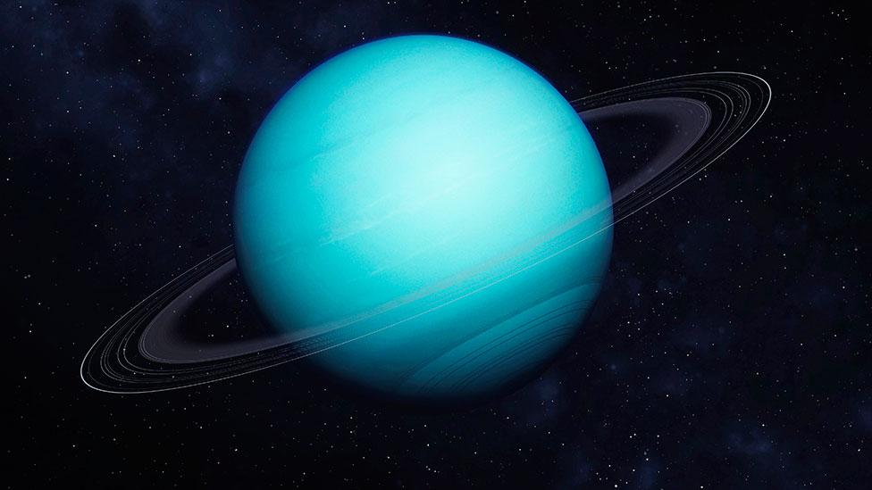

| Uranus is one of two ice giants in the outer solar system (the other is Neptune). Most (80 percent or more) of the planet's mass is made up of a hot dense fluid of "icy" materials—water, methane and ammonia—above a small rocky core. Near the core, it heats up to 9,000 degrees Fahrenheit (4,982 degrees Celsius).
Uranus is slightly larger in diameter than its neighbor Neptune, yet smaller in mass. It is the second least dense planet; Saturn is the least dense of all.
Uranus gets its blue-green color from methane gas in the atmosphere. Sunlight passes through the atmosphere and is reflected back out by Uranus' cloud tops. Methane gas absorbs the red portion of the light, resulting in a blue-green color. |
 |